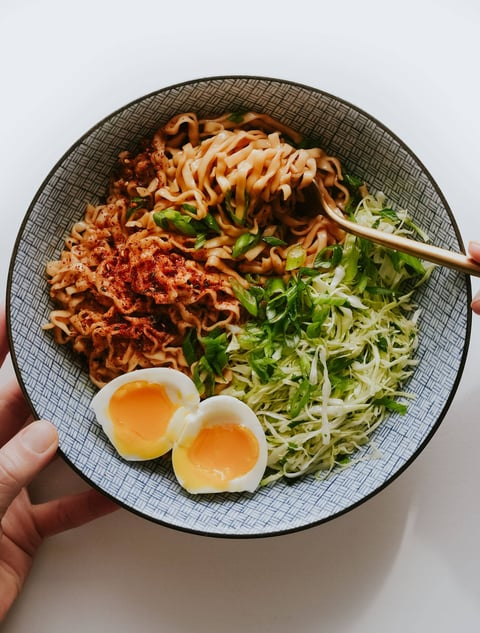

Short Sesame Butter Noodles

Description
Ingredients
- 1 (3.35 ounce) package saucy shortcut noodles
- 1 tablespoons butter
- 1–2 teaspoons honey
- 1/2 tablespoon toasted sesame oil (more to taste)
- a splash of water
- optional toppings: green onion, sesame seeds, chili crisp, togarashi
Steps
- Make the noodles: Cook the noodles according to package directions, including adding in the little sauce packet.
- Add the extras: Once prepared, toss hot noodles gently with the butter, honey, and sesame oil. Taste and adjust to however you like it. It should be silky when hot but it will get more sticky the longer you wait – if it’s too sticky, add a bit of warm water to loosen it which will emulsify and make it just a little creamy. It’s perfect.
- Finish and serve: Finish with chili crisp, scallions, or some kind of sesame or spicy sprinkle! Ideal little snack, or you can make it more of a rounded out meal by serving with a fried egg and/or a salad. Or ground chicken. Or shrimp. It’s the kind of thing that’s good with everything.
Back to overview